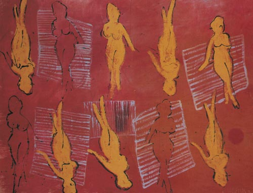

Details
Vernissage: 6. März 1998
Eröffnung: Dr. Wolfgang Hilger (Kulturamt der Stadt Wien)
Die Ausstellung war bis Ende Mai 1998 zu besichtigen.

Vernissage: 6. März 1998
Eröffnung: Dr. Wolfgang Hilger (Kulturamt der Stadt Wien)
Die Ausstellung war bis Ende Mai 1998 zu besichtigen.